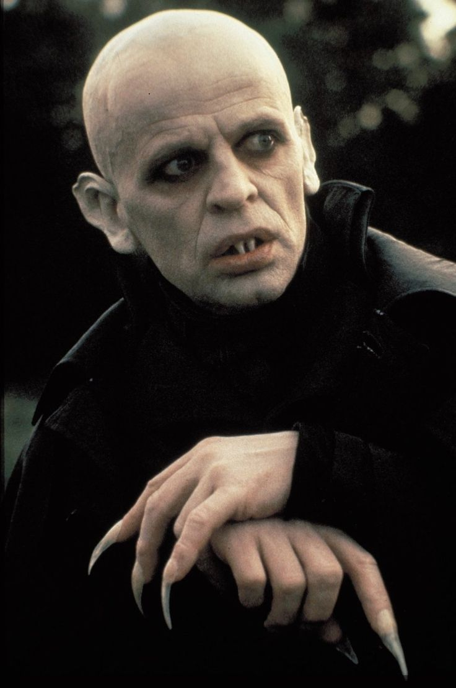
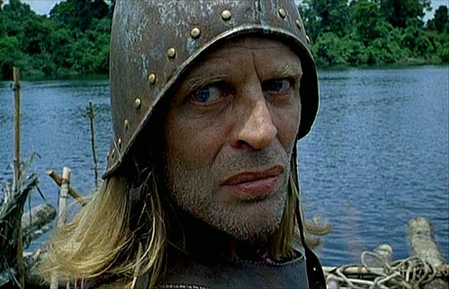
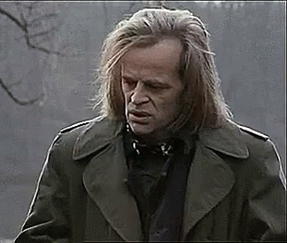

Klaus Kinski (born Klaus Günter Karl Nakszynski, 18 October 1926 – 23 November 1991) was a German actor, equally renowned for his intense performance style and notorious for his volatile personality. He appeared in over 130 film roles in a career that spanned 40 years, from 1948 to 1988. He played leading parts in five films directed by Werner Herzog (Aguirre, the Wrath of God, 1972; Nosferatu the Vampyre, 1979; Woyzeck, also 1979; Fitzcarraldo, 1982; Cobra Verde, 1987), who later chronicled their tumultuous relationship in the documentary My Best Fiend (1999).
During his lifetime, Kinski was a controversial and aggressive figure, prone to emotional and often violent outbursts directed at his directors and fellow cast members, issues further complicated by a history of mental illness. Herzog described him as "one of the greatest actors of the century, but also a monster and a great pestilence." Posthumously, his legacy has been further tangled by accusations of physical and sexual abuse of his daughters Pola and Nastassja, themselves actresses. His notoriety and prolific output has developed into a widespread cult following and a reputation as a popular icon.
Kinski's work with director Werner Herzog brought him international recognition. They made five films together: Aguirre: The Wrath of God (1972), Woyzeck (1978), Nosferatu the Vampyre (1979), Fitzcarraldo (1982) and Cobra Verde (1987). Despite their collaborations, Herzog had threatened, on occasion, to murder Kinski. In one incident, Kinski was said to have been saved by his dog who attacked Herzog as he crept up to supposedly burn down the actor's house.
Herzog has refused to comment on his numerous other plans to kill Kinski. However, he did pull a gun on Kinski, or at least threatened to do so, on the set of Aguirre, the Wrath of God, after the actor threatened to walk off the set.
Kinski died on 23 November 1991 of a sudden heart attack at his home in Lagunitas, California at age 65. His body was cremated and his ashes were scattered into the Pacific Ocean. Of his three children, only his son Nikolai attended the funeral.
Werner Herzog, in his 1999 documentary about Kinski titled My Best Fiend, claimed that Kinski had fabricated much of his autobiography, and told of the difficulties in their working relationship. Director David Schmoeller released a short 1999 film titled Please Kill Mr. Kinski, which examined the stories of Kinski's erratic and disruptive behavior on the set of his 1986 film Crawlspace. The film features behind-the-scenes footage of Kinski's various confrontations with director and crewmembers, along with Schmoeller's account of the events, in which he claims a producer offered to murder Kinski for his life insurance money.
In 2013, more than 20 years after her father's death, Pola Kinski published an autobiography titled Kindermund (or From a Child's Mouth), in which she claimed her father had sexually abused her from age of 5 to 19.
In an interview published by the German tabloid Bild on 13 January 2013, Kinski's younger daughter and Pola's half-sister, Nastassja, said their father would embrace her in a sexual manner when she was 4–5 years old but never had sex with her. Nastassja has expressed support for Pola and said that she was always afraid of their father, whom she described as an unpredictable tyrant.
Kinski was a
Yet, despite all that has been said and found, we cannot ignore the influence that these movies have given to the world, and should appreciate them as encapsulated moments of peculiar history.